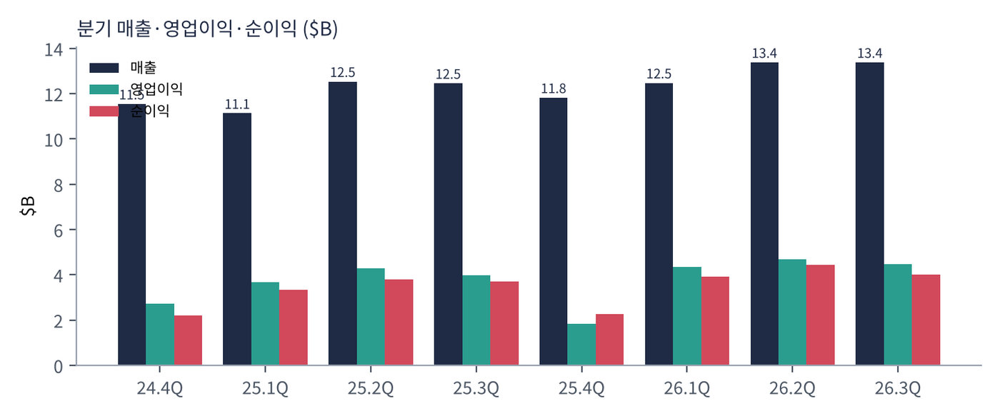
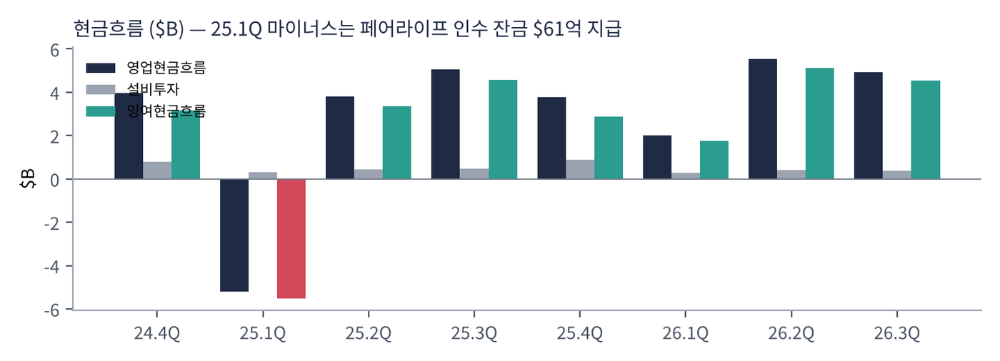
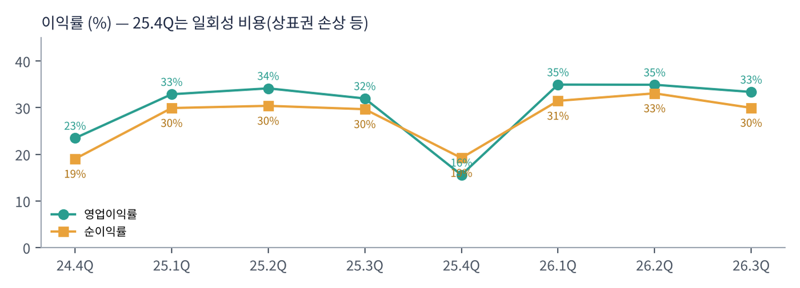
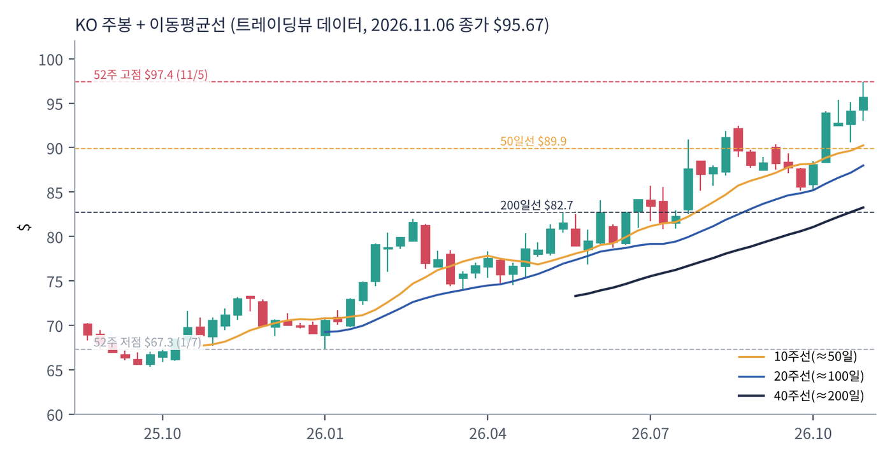
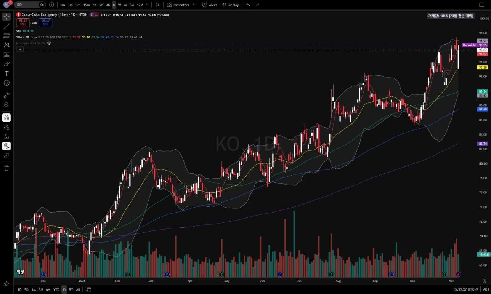
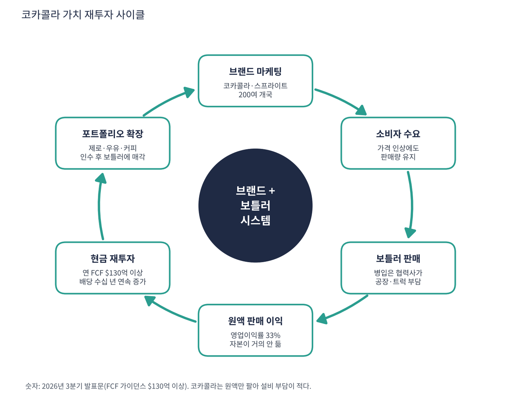

코카콜라는 세계 최대 음료 회사다. 그런데 공장에서 병에 음료를 담아 트럭으로 배달하는 일의 대부분은 코카콜라가 하지 않는다. 코카콜라는 '원액(콘센트레이트)과 브랜드'를 팔고, 병입·유통은 전 세계 협력 보틀러(병입 회사)가 맡는다. 그래서 매출은 펩시보다 작지만 영업이익률은 30%가 넘는다. 코카콜라·스프라이트·환타·파워에이드·스마트워터·코스타커피·페어라이프(우유) 등 200개 이상 브랜드를 갖고 있다.
| 항목 | 내용 |
|---|---|
| 종목 | The Coca-Cola Company (KO) · NYSE · 1886년 · 본사 애틀랜타 |
| 시가총액 | 약 $4,116억 · PER 28.2배 · 배당수익률 2.21% (트레이딩뷰, 11/6 종가 $95.67) |
| 최근 분기(26.3Q) | 매출 $134억(+7%), 유기적 매출 +7%, 영업이익률 33.4%, EPS $0.93(+8%) |
| 2026년 가이던스 | 비교 가능 EPS +9~10%, 잉여현금흐름 $130억 이상 |
| 최대주주 | 버크셔 해서웨이(워런 버핏)가 1988년부터 보유한 대표 장기 보유 종목 |
| 직책 | 인물 | 역할·특징 |
|---|---|---|
| CEO | 엔리케 브라운 | 2026년 CEO 취임. 브라질 출신, 중남미·글로벌 운영 총괄 출신으로 '현장 실행' 중시 |
| 이사회 의장 | 제임스 퀸시 | 2017~2025년 CEO. '토털 베버리지 컴퍼니'(콜라 회사 → 종합 음료 회사) 전략 설계자 |
| CFO | 존 머피 | 보틀러 재매각(리프랜차이징)·자본 배분 담당 |
경영 스타일: '자산은 가볍게, 브랜드는 무겁게'. 브라운 CEO의 3분기 코멘트 요지는 "시스템 전체의 꾸준한 모멘텀이 연간 가이던스에 자신감을 준다. 소비자 가까이에서 민첩하게 실행하고, 미래를 이끌 역량·브랜드·인재에 투자하며 질 좋은 성장을 하겠다"이다. 코카콜라는 보틀러를 인수해 문제를 고친 뒤 다시 파는 '리프랜차이징'을 반복한다. 2027년에도 보틀러 매각으로 매출이 약 8% 줄지만(EPS 영향은 약 2%) 이익률은 더 오른다고 회사가 밝혔다. 인도 보틀러(HCCH)의 IPO 서류 제출도 그 흐름이다.
첨단 기술 회사가 아니다. 핵심 역량은 130년 넘게 쌓은 브랜드, 200여 개국 보틀러 네트워크, 그리고 디지털 마케팅·데이터 기반 가격 책정(나라·포장별 가격 최적화)이다.
탄산음료 하나에 기대지 않고 물·스포츠음료·커피·차·유제품까지 소비자가 마시는 모든 음료에서 1위 또는 2위가 되는 것. 설탕 줄인 제품(제로) 비중 확대.
| 분기 | 매출 | 영업이익 | 영업이익률 | 순이익 | 영업현금 | 설비투자 | EPS | 특이 사항 |
|---|---|---|---|---|---|---|---|---|
| 24.4Q | $115억 | $27.1억 | 23.5% | $21.9억 | $39.5억 | $8.0억 | $0.51 | |
| 25.1Q | $111억 | $36.6억 | 32.9% | $33.3억 | -$52.0억 | $3.1억 | $0.77 | 페어라이프 잔금 $61억 |
| 25.2Q | $125억 | $42.8억 | 34.1% | $38.1억 | $38.1억 | $4.4억 | $0.88 | |
| 25.3Q | $125억 | $39.8억 | 32.0% | $37.0억 | $50.4억 | $4.8억 | $0.86 | |
| 25.4Q | $118억 | $18.4억 | 15.6% | $22.7억 | $37.6억 | $8.8억 | $0.53 | 일회성 비용 |
| 26.1Q | $125억 | $43.6억 | 35.0% | $39.2억 | $20.2억 | $2.7억 | $0.91 | |
| 26.2Q | $134억 | $46.7억 | 34.9% | $44.2억 | $55.2억 | $4.2억 | $1.03 | |
| 26.3Q | $134억 | $44.6억 | 33.4% | $40.1억 | $49.3억 | $3.8억 | $0.93 | 유기적 매출 +7% |


흐름 요약: 분기 매출 $115억 → $134억, 영업이익률은 일회성 분기(24.4Q, 25.4Q)를 빼면 꾸준히 32~35%다. 25.1Q 영업현금 -$52억은 페어라이프 인수 잔금(조건부 대가) 지급 때문이다. 설비투자는 분기 $3~9억으로 매출의 3% 수준이라, 번 돈 대부분이 잉여현금이 된다. 최근 4분기 FCF는 $143억이다.
| 구분 | 돈을 버는 방식 | 특징 |
|---|---|---|
| 원액·브랜드 사업 | 보틀러에 원액·시럽을 팔고 브랜드 사용료 성격의 이익. 3분기 원액 판매량 +7% | 이익의 대부분, 이익률 매우 높음 |
| 직접 병입 사업(BIG) | 일부 지역 보틀러를 직접 소유·운영(재매각 대기) | 매출 크고 이익률 낮음 → 매각 대상 |
| 글로벌 벤처스 | 코스타커피 등 | 소규모 |
| 지역 | 북미, 중남미, 유럽·중동·아프리카, 아시아태평양 | 신흥국이 판매량 성장 주도 |
| 카테고리 | 탄산(코카콜라·제로·스프라이트), 물·스포츠, 커피·차, 주스·유제품(페어라이프) | 제로 슈거·페어라이프가 성장 견인 |

3분기 유기적 매출 +7%는 원액 판매량 +7%, 가격·믹스 +1%로 구성된다(환율 등 기타 효과 별도). 즉 가격 인상이 아니라 물량이 성장을 이끌었다는 점이 질 좋은 성장이다. 영업이익률은 일회성 분기를 빼면 32~35%로 매우 안정적이다.
코카콜라의 목적은 백 년 넘게 같다. "세상을 상쾌하게, 그리고 변화를 만든다"(회사 목적문). 투자자 언어로는 '세계 모든 사람이 하루 한 번 이상 마시는 음료에서 가장 높은 이익률로 돈을 버는 것'이다.
| 축 | 내용 |
|---|---|
| 자산 경량화 | 보틀러 재매각 → 매출은 줄고 이익률·자본수익률은 상승 |
| 포트폴리오 확장 | 탄산 → 전 음료. 저당·무당, 유제품, 커피 |
| 신흥국 성장 | 인도·아프리카·동남아의 1인당 소비 증가 |
| 주주환원 | 수십 년 연속 배당 증가. 버크셔 같은 장기 주주 기반 |


위: 트레이딩뷰 주봉 데이터로 재구성. 아래: 트레이딩뷰 공개 차트 일봉 캡처(작도 숨김).
| 이동평균 | 값 | 종가 대비 | 해석 |
|---|---|---|---|
| 5일선 | $95.57 | +0.1% | 11/5 사상 최고가 부근 |
| 20일선 | $93.28 | +2.6% | |
| 50일선 | $89.94 | +6.4% | 10월 실적 후 상승 지지 |
| 100일선 | $87.49 | +9.3% | |
| 200일선 | $82.74 | +15.6% | 200일선과 15% 이격 — 과열 경계 |
완전 정배열이다. 1월 $67 저점에서 11/5 $97.39 사상 최고가까지 꾸준히 올랐고, 10월 이후 AI·성장주에서 빠진 돈이 방어주로 옮겨오며 상승이 가팔라졌다. 다만 200일선과의 이격 15.6%는 코카콜라로서는 매우 큰 과열이다.
| 규칙 | 기준 | 현재 값 | 신호 |
|---|---|---|---|
| 장기 추세 필터 | 종가 vs 200일선 | $95.67 > $82.74 | 매수 |
| 중장기 교차 | 50일선 vs 200일선 | $89.94 > $82.74 | 매수 |
| 단기 교차 | 20일선 vs 50일선 | $93.28 > $89.94 | 매수 |
| 돈키언 채널 | 55일 고가 $97.39 / 저가 $85.13 | 중간값 $91.26 위 | 매수 |
| 1개월 모멘텀 | 21거래일 수익률 | +9.0% (기준 $87.77) | 매수 |
| 3개월 모멘텀 | 63거래일 수익률 | +10.1% (기준 $86.87) | 매수 |
| 6개월 모멘텀 | 126거래일 수익률 | +22.0% (기준 $78.42) | 매수 |
| 12개월 모멘텀 | 252거래일 수익률 | +39.6% (기준 $68.51) | 매수 |
| 종합 (8개 평균) | +1.00 | 강한 매수 |
해석: 8개 신호 모두 매수(+1.00). 12개월 수익률 +40%는 코카콜라 역사상 드문 수준이다. 14일 ATR $1.96 (2.0%)로 하루 2% 움직임이 보통이다.
| 가격 | 무엇이 바뀌나 | 의미 |
|---|---|---|
| $93.3 | 20일선 | 단기 조정 시작 |
| $91.3 | 돈키언 중간값 | 점수 +0.75 |
| $87.8 | 1개월 기준가 (12월 초에는 더 올라감) | 점수 +0.50 |
| $82.7 | 200일선 | 장기 추세 이탈 |
사상 최고가 부근이고 과열이 커서 추격 매수보다 20일선~50일선($90~93) 눌림목을 기다리는 쪽이 낫다. PEG 판정상 매수 대상이 아니므로 신규 매수보다 보유자의 추세 추종(55일 저점 $85 이탈 시 정리)에 적합한 차트다.
| 악재 요인 | 내용 | 강도 |
|---|---|---|
| 밸류에이션 과열 | PER 28배, PEG 2.3, 200일선 대비 +16%. 방어주로의 자금 이동이 되돌려지면 급락 가능 | 높음 |
| 건강 규제·트렌드 | 설탕세, GLP-1 비만약 확산에 따른 단 음료 소비 감소 가능성 | 중간 |
| 환율 | 매출 대부분이 해외 — 달러 강세 시 이익 감소 | 중간 |
| 보틀러 매각 기저효과 | 2027년 매출 약 -8%, EPS 약 -2% 영향(회사 발표) | 참고 |
| 세금 분쟁 | 미국 국세청과의 이전가격 세금 소송(수십억 달러 규모) | 참고 |
| 티커 | 회사 | 시가총액 | PER(TTM) | PEG | P/S | EPS 성장(YoY) |
|---|---|---|---|---|---|---|
| KO | 코카콜라 | $412B | 28.2배 | 2.30 | 8.04배 | +12% |
| PEP | 펩시코 | $193B | 17.8배 | 0.34 | 1.95배 | +51% |
| KDP | 큐리그닥터페퍼 | $50B | 33.6배 | – | 2.17배 | -6% |
| MNST | 몬스터 베버리지 | $90B | 42.4배 | 1.29 | 10.30배 | +35% |
비교 결론: 코카콜라 PER 28.2배는 펩시(17.8배)보다 58% 비싸다. 펩시의 PEG 0.34는 전년 일회성 손실 기저효과가 크지만, 그래도 '가격 대비 성장'은 펩시가 앞선다. 몬스터는 PER 42배로 더 비싸지만 EPS 성장이 +35%로 PEG 1.29다. 코카콜라는 피어 중 PEG가 가장 높다.
코카콜라는 적자 기업이 아니다. 최근 4분기 순이익 $146억, FCF $143억으로 현금 런웨이는 의미가 없다. 대신 '현금을 얼마나 안정적으로 벌어 주주에게 돌려주나'를 본다.
| 지표 | 값 | 의미 |
|---|---|---|
| 최근 4분기 영업현금 | $162억 | SEC XBRL |
| 잉여현금흐름(FCF) | +$143억 | 트레이딩뷰 $142.8억과 일치. 매출의 28% |
| 현금성 자산 / 총부채 | $166억 / $416억 | 순부채 $250억 = FCF 1.7년치 |
| 2026년 FCF 가이던스 | $130억 이상 | 영업현금 $152억 이상 − 설비투자 약 $22억 |
| 회사 | P/S | 영업이익률 | 해석 |
|---|---|---|---|
| KO | 8.0배 | 약 33% | 원액 모델 — 매출이 작고 이익률이 높음 |
| 펩시코(PEP) | 1.95배 | 약 13% | 스낵·병입까지 직접 → 매출 크고 이익률 낮음 |
| 큐리그닥터페퍼(KDP) | 2.17배 | – | 커피 포드 + 음료 |
| 몬스터(MNST) | 10.3배 | 약 30% | 에너지음료, 고성장 |
해석: 코카콜라의 P/S 8배는 펩시의 4배다. 이는 고평가라기보다 사업 모델 차이다. 코카콜라는 병입·유통 매출을 보틀러에 넘기고 원액 이익만 가져가므로 매출이 작다. 그래서 P/S보다 '영업이익률 33% × 안정성'에 대한 가격으로 읽어야 한다. 다만 몬스터처럼 두 자릿수 성장을 하는 회사와 P/S가 비슷하다는 점은 성장 대비 비싸다는 신호다.
| 지표 | 값 | 판정 |
|---|---|---|
| EBITDA (트레이딩뷰) | $175억 | 흑자 |
| EBITDA (직접 계산, TTM) | $164억 | 영업이익 $153억 + 감가상각 $10억 (25.4Q 일회성 비용 포함) |
| EBITDA 마진 | 약 32~34% | 필수소비재 최상위 |
| 순부채 / EBITDA | 약 1.5배 | 안정적 |
| 방식 | PER | EPS 성장률 | PEG | 판정 |
|---|---|---|---|---|
| 트레이딩뷰 (TTM) | 28.2배 | +12.3% | 2.30 | 기준 초과 |
| 직접 계산 (SEC 희석 EPS) | 28.1배 ($95.67 ÷ $3.40) | +12.6% ($3.02 → $3.40) | 2.23 | 기준 초과 |
| 2026년 가이던스 (비교 가능 EPS +9~10%) | 약 28배 | +9.5% | 약 2.9 | 기준 초과 |
판정: PEG 2.30 → 기준(1.0) 초과, '투자 적격' 아님. 코카콜라는 연 8~10% 성장하는 회사인데 PER은 28배다. 주가가 1월 $67 → 11월 $96(+42%)으로 오르며 PER이 성장률보다 훨씬 빨리 올랐다. 코카콜라는 PEG가 1 이하로 내려온 적이 거의 없는 '배당·안정성 프리미엄' 종목이라, 이 기준으로는 구조적으로 통과하기 어렵다. PEG 기준을 엄격히 적용하면 매수 대상이 아니다.

코카콜라 사이클은 엔비디아처럼 빠르게 커지는 사이클이 아니라 느리지만 거의 멈추지 않는 사이클이다. 중심에는 브랜드와 보틀러 시스템이 있다.
| 고리 | 현재 숫자 | 고리 강도 | 약해지는 신호 |
|---|---|---|---|
| ① 브랜드 마케팅 | 200개 이상 브랜드, 세계 최고 수준 브랜드 가치 | 강함 | 젊은 층의 탄산 이탈 |
| ② 소비자 수요 | 원액 판매량 +7% | 강함 | 판매량 감소 + 가격만 인상 |
| ③ 보틀러 판매 | 협력 보틀러가 설비·유통 투자 부담 | 강함 | 보틀러 수익성 악화 |
| ④ 원액 이익 | 영업이익률 33.4% | 강함 | 원가·환율로 마진 하락 |
| ⑤ 현금 재투자 | FCF 연 $143억, 배당 + 마케팅 | 강함 | 부채 증가로 배당 재원 압박 |
| ⑥ 포트폴리오 확장 | 제로·페어라이프 성장, 보틀러 재매각 | 진행 중 | 인수 실패(일회성 손상) |
엔비디아와의 차이: 엔비디아 사이클은 매 바퀴마다 시장 자체가 몇 배씩 커지지만, 코카콜라 사이클은 한 바퀴에 5~8%씩 커진다. 대신 경기 침체·금리·기술 변화에 거의 영향을 받지 않는다. 주가가 오르는 국면에서는 '사이클의 속도'(EPS +10%)보다 PER이 더 빨리 올라간 상태라는 점을 기억해야 한다.